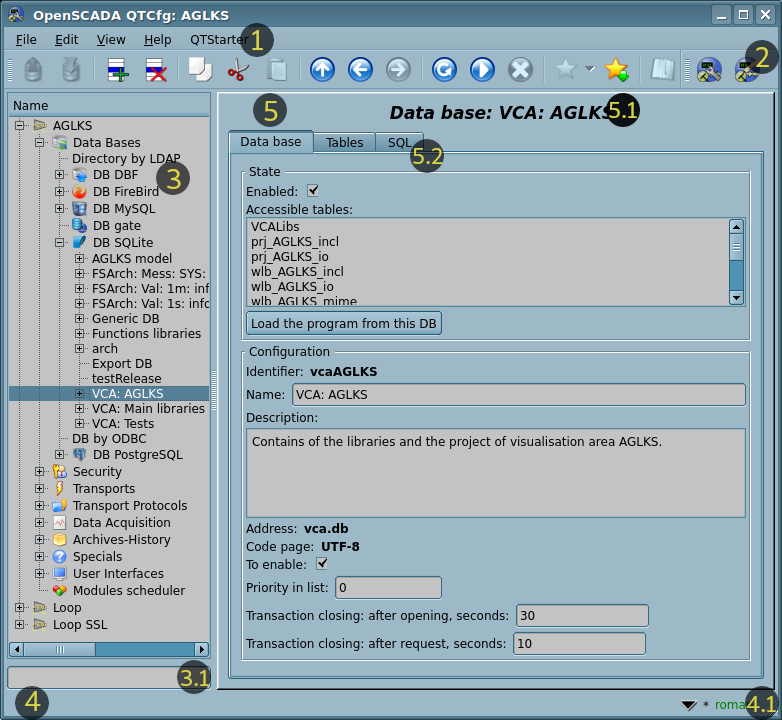

| Модуль |
Имя |
Версия |
Лицензия |
Источник |
Языки |
Платформы |
Тип |
Автор |
Описание
|
| QTCfg |
Конфигуратор программы (Qt)
|
5.12 |
GPL2 |
ui_QTCfg.so |
en,uk,ru,de |
x86,x86_64,ARM
|
Пользовательские интерфейсы |
Роман Савоченко |
Предоставляет основанный на Qt конфигуратор OpenSCADA.
- + дополнить вкладками и вкладкой "Выбранное" с: процедурами, любимым импортом или другие пользовательские функции быстрого доступа.
|
Модуль предоставляет конфигуратор OpenSCADA, который основан на многоплатформенной библиотеке Qt графического пользовательского интерфейса (GUI), изначально созданного фирмой TrollTech.
В основе модуля лежит интерфейс управления OpenSCADA, а значит предоставляется единый интерфейс конфигурации. Обновление модуля может потребоваться только в случае обновления спецификации языка интерфейса управления. Для запроса контекста страницы используется групповой запрос интерфейса управления, что позволяет оптимизировать время удалённого доступа по высоколатентным и медленным каналам связи.
Рассмотрим рабочее окно конфигуратора на рисунке 1.
 Рис.1. Рабочее окно конфигуратора.
Рабочее окно конфигуратора состоит из следующих частей:
- 1 Меню — содержит выпадающее меню конфигуратора.
- 2 Панель инструментов — содержит кнопки быстрого управления.
- 3 Навигатор — предназначен для прямой навигации по дереву управления.
-
 Изображение иконки проекта OpenSCADA сначала получается из файла "{StationName}.[png|gif|jpg|jpeg]", а затем, при отсутствии первого, из файла "{StationID}.[png|gif|jpg|jpeg]", в каталоге иконок.
Изображение иконки проекта OpenSCADA сначала получается из файла "{StationName}.[png|gif|jpg|jpeg]", а затем, при отсутствии первого, из файла "{StationID}.[png|gif|jpg|jpeg]", в каталоге иконок.
- 3.1 Поле ввода текста для поиска элемента в текущей ветви дерева.
- 4 Строка статуса — отображает состояний конфигуратора с кнопкой вызова истории строки статуса.
- 4.1 Индикатор/выбор пользователя — отображает текущего пользователя, по двойному клику открывается диалог выбора пользователя. Также содержит индикатор факта внесения изменений в конфигурацию.
- 5 Рабочее поле — поделено на части:
- 5.1 Имя узла — содержит имя текущего узла.
- 5.2 Табулятор рабочих областей — в табулятор помещаются корневые страницы (области управления) узла. Области управления следующих уровней помещаются в основном пространстве контроля.
Menu of the configurator contains the following items:
- File — group of the general commands:
- Load from DB — loads the selected object or branch of the object from the database.
- Load from DB forcibly — loads the selected object or branch of the object from the database forcibly, not only when it changed.
- Save to DB — saves the selected object or branch of the object to the database.
- Save to DB forcibly — saves the selected object or branch of the object to the database forcibly, not only when it changed.
- Close — closes the configurator window.
- Quit — quits OpenSCADA.
- Edit — editing commands:
- Add — adds a new object to the container.
- Delete — deletes the selected object.
- Copy item — copies the selected object.
- Cut item — cuts of the selected object. The original object is removed after paste.
- Paste item — pastes of the copied or cut item.
- View — navigation and control of the view commands:
- Up — goes to the parent page.
- Back — goes back to the previous page.
- Forward — goes forward to the forward page.
- Refresh — refreshes the current page.
- Start — runs periodically update of the current page content with an interval of one second.
- Stop — stops the periodically update of the current page content with an interval of one second.
- Favorite — going to the selected favorite pages.
- Append to favorite for {Page}/Remove from favorite for {Page} — toggles the current page as favorite.
- Help — assistance call commands:
- About — information about this module and OpenSCADA.
- About Qt — information about the Qt library.
- Manual on 'QTCfg' — calls inline or offline manual on the module QTCfg.
- Manual on 'OpenSCADA 0.9' — calls inline or offline index of links to documents and manuals on OpenSCADA.
- Manual on the page — calls inline or offline manual on selected page.
- What's This — requests information for the interface elements and receive their full contextual help.
The toolbar contains the following management buttons (from left to right):
- Load from the DB — loads the selected object or branch of the object from the database.
- Save to the DB — saves the selected object or branch of the object to the database.
- Add — adds a new object to the container.
- Delete — deletes the selected object.
- Copy item — copies the selected object.
- Cut item — cuts of the selected object. The original object is removed after paste.
- Paste item — pastes of the copied or cut item.
- Up — goes to the parent page.
- Back — goes back to the previous page.
- Forward — goes forward to the forward page.
- Refresh — refreshes the current page.
- Start — runs periodically update of the current page content with an interval of one second.
- Stop — stops periodically update of the current page content with an interval of one second.
- Favorite — going to the selected favorite pages.
- Append to favorite for {Page}/Remove from favorite for {Page} — toggles the current page as favorite.
- Manual on the page — calls inline or offline manual on selected page.
- Call buttons of the graphical interface modules of OpenSCADA based on the Qt library
In the navigation tree the context menu of following contents is supported:
- Load from the DB — loads the selected object or branch of the object from the database.
- Save to the DB — saves the selected object or branch of the object to the database.
- Add — adds a new object to the container.
- Delete — deletes the selected object.
- Copy item — copies the selected object.
- Cut item — cuts of the selected object. The original object is removed after paste.
- Paste item — pastes of the copied or cut item.
- Favorite — going to the selected favorite pages.
- Append to favorite for {Page}/Remove from favorite for {Page} — toggles the current page as favorite.
- Refresh the items tree — refreshes the navigation tree content.
Элементы управления делятся на: базовые, команды, списки, таблицы и изображения. Все элементы отображаются в последовательности, строго соответствующей их расположению в описании языка интерфейса управления.
1 Configuration
In order to customize its own behavior in some cases, the module provides the ability to configure the parameters through the control interface of OpenSCADA (Fig.2). These parameters are:
- Timeouts of the connection checking '{fail}:{good}' — sometimes (for the SSH tunnels), it is useful to reduce the connecting timeout up to 30 seconds to keep the connection.
- Initial path of the configurator — allows to determine what local page to open when you start the configurator.
- Initial user of the configurator — points on behalf of the which user to open configuration without requiring a password.
- ToolTip limit in chars to prevent of big emerging help windows, by default 150. Set zero for disable.
- Go to configuration of the remote OpenSCADA hosts list, which is used to provide the remote configuration.

Рис.2. Страница конфигурации самого конфигуратора.
Вертикально масштабированные поля (перечень, текст и таблица) предусматривают автоматичное масштабирование на доступное пространство и под содержимое полей. Кроме этого, для них доступна возможность ручного изменение высоты путём хватания за нижний край виджета и перетягивания его, что однако работает не для всех стилей виджетов Qt.
2 Базовые элементы
В число базовых элементов входят: информационные элементы, поля ввода значений, элементы выбора из списка, флаги, текстовые поля. В случае отсутствия имени элемента, базовый элемент присоединяется к предыдущему базовому элементу. Пример группы базовых элементов с присоединением приведён на рисунке 3.
Для элементов ввода, которые не подразумевают мгновенного изменения и могут продолжительное время редактироваться перед окончательным завершением, предусмотрен механизм подтверждения. Этот механизм позволяет исключить задержки при редактировании, особенно в случае конфигурации удалённых станций, и вносить изменения по подтверждению. К элементам ввода с подтверждением относятся: поля ввода строк текста или числовых значений и текстовые поля. Подтверждение осуществляется нажатием кнопки, которая появляется рядом с полем ввода после начала редактирования.
Текстовые поля поддерживает поиск, также как подсветку синтаксиса, правила которой передаются в виде регулярных выражений из интерфейса управления или могут быть встроены в значение текста как комментарий в XML-теге "SnthHgl".

Рис.3. Присоединение базовых элементов.
3 Команды
Команды — это элементы передачи определённых указаний действия узлу и организации ссылок-переходов на другие страницы. Команды могут содержать параметры. Параметры формируются из базовых элементов. Пример команды с параметрами приведен на рисунке 4.

Рис.4. Команда.
4 Списки
Списки содержат группу базовых элементов одного типа. Операции над элементами доступны через контекстное меню списка. Через элементы списка могут выполняться операции перехода на другие страницы, обычно дочерние. Переход осуществляется посредством двойного клика мышки на элементе списка. Списки могут быть индексированными. Пример списка приведен на рисунке 5.

Рис.5. Список.
5 Таблицы
Таблицы содержат значения базовых элементов и поддерживают поиск. Тип базового элемента является индивидуальным для каждой колонки. Пример таблицы приведен на рисунке 6. Операции над структурой таблицы, для редактируемых таблиц, доступны посредством контекстного меню. Редактирование элементов таблицы производится путём двойного клика по нужной ячейке.
6 Images
The images are designed to transmit graphic information into the configurators. Example of the image is shown in Figure 7. From the context menu you can save the image and writable ones you can also load and clear.

Рис.7. Изображение.


{kind=link}
{kind=link}